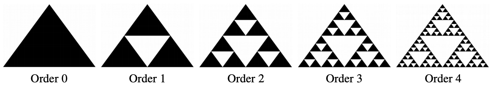
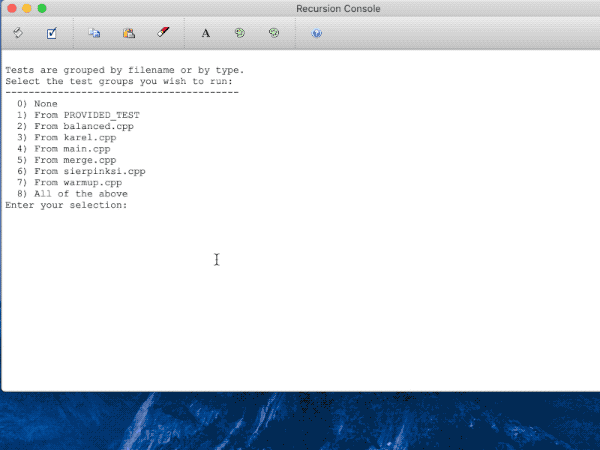

Recursion can produce incredible and beautiful images from self-similar subparts. These designs are known as fractals. One of the most famous fractals is the Sierpinski triangle, named after the Polish mathematician Waclaw Sierpinski (whom we adopt as an honorary member of the Fall Quarter "Ski Team").
As with many self-similar patterns, it is defined recursively:
- An order-0 Sierpinski fractal is a single filled triangle.
- An order-n Sierpinski fractal, where n > 0, consists of three Sierpinski fractals of order n – 1, whose side lengths are half the size of the original side lengths, arranged so that they meet corner-to-corner.
For example, here are Sierpinski fractals of the first few orders: 
Take a moment to confirm that the order-1 Sierpinski fractal consists of three smaller copies of the order-0 fractal, that the order-2 fractal is formed from three smaller copies of the order-1 fractal, and so on.
Although the higher-order fractals might look like we’ve drawn one large black triangle with various upside-down white triangles on top, that is not the case. Each triangle drawn is black; the white triangles are simply empty spaces between the black triangles. Your code should draw only the filled black triangles. The white parts are “negative space,” or regions where nothing is drawn.
Implement the function
int drawSierpinskiFractal(GWindow& gw, GPoint one, GPoint two, GPoint three, int order)
which takes as input the three corner points of the fractal and the order. The function draws a Sierpinski fractal defined by those three corner points and of the specified order. The value returned by the function is the total count of black triangles drawn. Although it is possible to directly calculate the number of triangles using a simple formula, we want you to instead apply a recursive approach of summing the counts from the recursive calls.
We provide the drawOrderZero utility function to draw the order 0 fractal, a filled black triangle defined by its three corner points:
void drawOrderZero(GWindow& gw, GPoint one, GPoint two, GPoint three)
Notes
- Draw pictures! One key part is figuring out the location for each of the corners, and that’s easier to do with a diagram in front of you.
- The midpoint of each side of the large outer triangle becomes a corner of one of the smaller inner triangles. Given a line segment whose endpoints are
{x1, y1}and{x2, y2}, its midpoint is at{ (x1+x2)/2, (y1+y2)/2 }. - The corner points of the fractal can be arbitrarily chosen to start. They don’t necessarily form an equilateral triangle nor must the base be parallel to the window bottom. The choice of which corner is identified as
oneversustwoversusthreeis completely arbitrary. - A
GPointstruct is used to specify an x,y coordinate within the graphics window. Here is the documentation for GPoint. - The only drawing function you need is our provided
drawOrderZero. You do not need to dig into any other drawing functionality in the Stanford libraries.
Testing graphics
A function that produces graphical output, such as Sierpinski, doesn't lend itself to being unit-tested, so we've provided a simple GUI demo you can use to interactively test. The starter code for sierpinski.cpp contains a provided test that runs our GUI demo. Do not modify this provided test. Running this test will bring up a graphical window for interactively testing your fractal drawing. Watch this screencast movie to see a demonstration of the GUI operation:

In the GUI, use the slider to change the order and drag the corners to change the fractal dimensions. It will be up to you to visually inspect the drawing for correctness and confirm that the count of triangles returned is as expected. When you are you done testing, close the graphics window to exit the GUI.
Extensions
The Sierpinski fractal is only one of many self-similar images; consider coding up another! We’d love to see what you create.
Some resources: